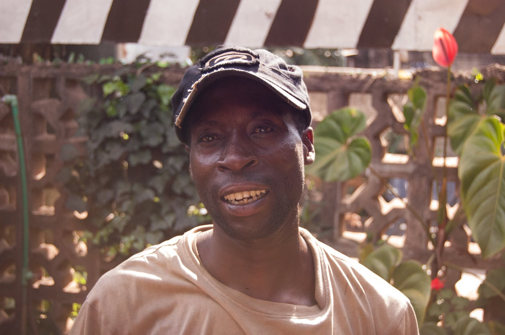
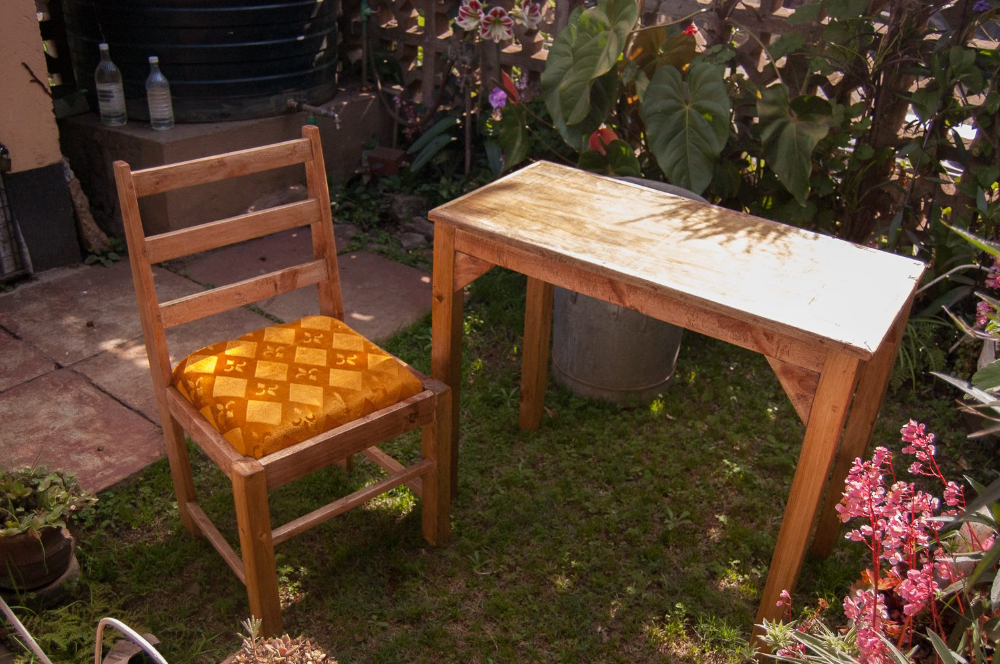

Buying a desk in Kibera
POSTED 29 SEPTEMBER 2013
I've been in Nairobi now just under a week, and so far so good. A wrench was thrown in my plans when the language institute where I intended to study apparently closed, so I am taking classes at the National Museums of Kenya instead. The class started the day after I arrived, and I'm now through the first week of lessons. My favorite Swahili word so far: juzi, which means "the day before yesterday". How convenient is that? Somebody please invent an English equivalent so I can stop saying "the day before yesterday".
Learning a new language can be quite humbling, but so far I am having fun and enjoying practicing with Paul, my housemate Collins, and random people I meet. It will be a long road to reaching conversational proficiency, but I am up for the challenge.
It didn't take long for me to realize I would need a desk for studying when I got home from class. I asked my housemate Collins about this and we decided to find a carpenter in Kibera, Nairobi's slum. Kibera is very close to where we live and there are many carpenters there who make and sell furniture.
After passing on the first shop we came to (the owner was asking an absurd price), we came to a second shop where a man introduced himself as Robert.
I described to Robert what I was looking for (a basic desk and a chair) and he said that while he didn't have what I was looking for in stock, he could make both the desk and chair from scratch. Not only that, but he could have them done and ready to be picked up the next day. The price? 3,500 schillings, or about $40. Sure enough, the next day I returned and picked up my new furniture. Robert was kind enough to help carry it back with me.
The polyurethane is still tacky, so I am leaving the furniture outside overnight to cure. As a westerner this shopping experience was bizarre, but typical I'm sure of many other parts of the world. Thanks to Robert for these fine new pieces of furniture! They will surely be used for many hours of studying...